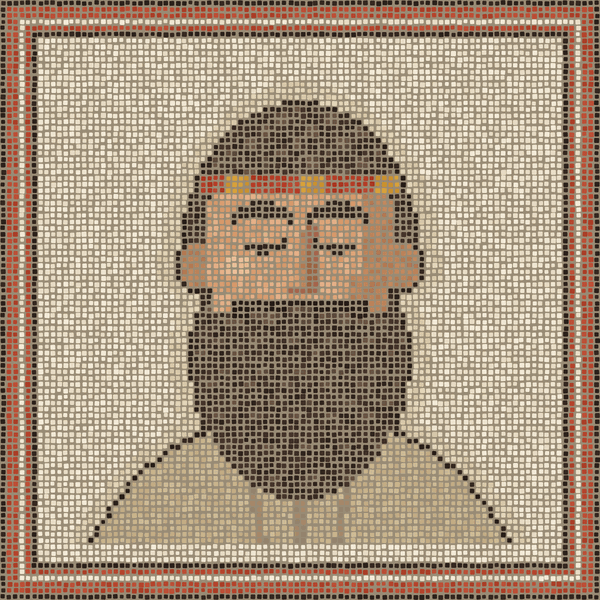

The lockfile is ignored
Both Dockerfiles copy only package.json and run npm install, so every build can resolve different dependencies. Nobody planted this one. It was a real mistake in the demo.
Copy the lockfile and run npm ci --omit=dev.
An agent skill that finds every drift between dev, staging and production, and ranks it by risk. It never prints a secret.
npx skills add senavoh/parmenides

8 tiles out of place in prod. 5 high risk, 3 medium.
Stripe webhook secret High
staging presentprod missing
Add it to the prod secret store, set to prod's own webhook signing secret.
Already one: express, pg and stripe from one lockfile, production mode, the cookie and pool settings, the deploy script. Left out on purpose: the log level, the URL hosts and the replica count, listed in .parmenides.yml. This is a real, unedited run on a demo app with eight drifts planted. It found all eight. Read the full report
Webhook secret present → missing Node 20 → 18 Postgres 16.4 → 15.8 Tests and migrations run → skipped CORS one origin → any Redis 7.4 → latest New checkout on → off Timeout 10s → 3s
He compares keys, not values. A secret only ever shows up as same, differs or missing. If a real secret is committed to the repo, he flags it without printing it.
STRIPE_SECRET_KEYdiffersSESSION_SECRETdiffersDATABASE_URLhost differsSTRIPE_WEBHOOK_SECRETmissing in prodStaging and prod can agree and both be wrong. He lists those apart from the drift, under Wrong everywhere.
Both Dockerfiles copy only package.json and run npm install, so every build can resolve different dependencies. Nobody planted this one. It was a real mistake in the demo.
Copy the lockfile and run npm ci --omit=dev.
All three are in the repo. Every secret in them is a placeholder, so nothing leaked, and he says so without printing one. It's still a habit worth breaking.
Move them to .env.*.example and ignore the real files.
No. It reads files and writes nothing unless you ask it to save the report as PARMENIDES.md. It never runs a deploy or touches a real environment.
In per-environment files like .env.production, config/staging.yml, docker-compose.prod.yml, values-prod.yaml or prod.tfvars. Or in branches, like staging against main.
List them in a .parmenides.yml and they stop counting as drift. A key that's missing still counts.
Claude Code, Codex, Cursor, Gemini CLI, OpenCode, and any agent that reads SKILL.md files. No API key, no account.
Yes. Open source under the MIT license. The only cost is your agent's own usage.
A Greek philosopher from Elea, born around 515 BC. His one surviving work is a poem, On Nature, where a goddess teaches him that what is, is one and unchanging.
Install the skill once, open a project, and ask. Nothing to host, no API key.